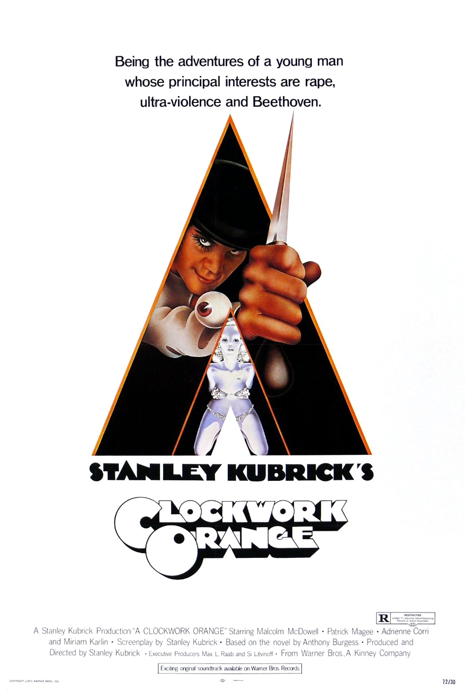
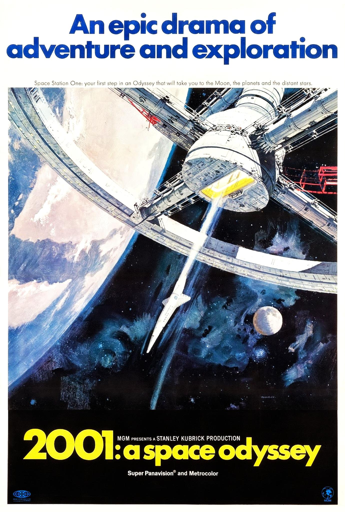
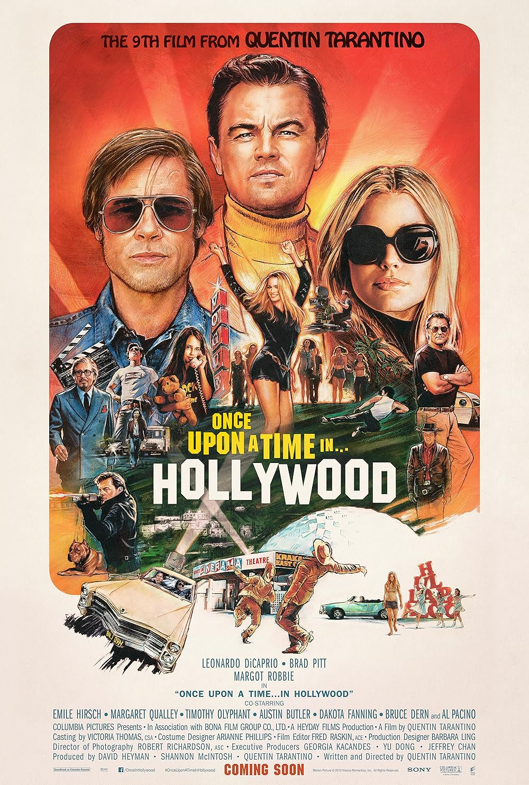
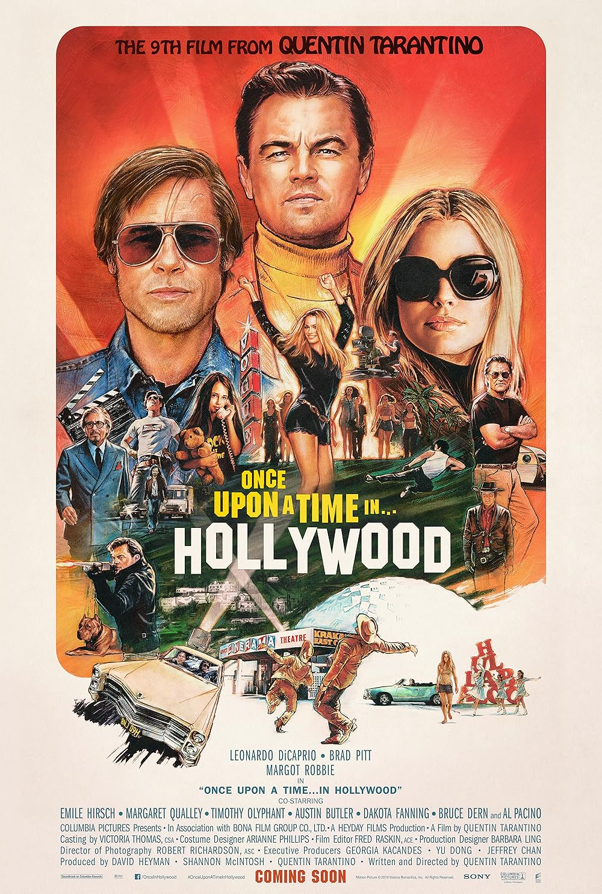

Great Directors
Stanley Kubrick
Stanley Kubrick was an iconic American film director, producer, and screenwriter, renowned for his meticulous attention to detail and groundbreaking contributions to cinema. His directing style was marked by a strong visual aesthetic, precise composition, and innovative use of technology. Kubrick was known for his perfectionism, often pushing actors and crews to their limits in pursuit of his vision. His films spanned multiple genres, from science fiction (2001: A Space Odyssey) to psychological horror (The Shining) and war (Full Metal Jacket), always focusing on themes of human nature, existentialism, and the complexities of power and control. Kubrick's work often featured slow, deliberate pacing, striking cinematography, and unsettling soundtracks, creating immersive, thought-provoking experiences that continue to influence filmmakers today.
His Movies
 
Christopher Nolan

Christopher Nolan is a British-American filmmaker known for his complex, thought-provoking narratives and innovative filmmaking techniques. His directing style often involves non-linear storytelling, intricate plot structures, and a focus on exploring themes like time, memory, and human consciousness. Nolan frequently uses practical effects and minimal CGI, favoring real-world locations and immersive action sequences. He also emphasizes deep, atmospheric sound design and a strong reliance on IMAX cameras for visually striking shots. His films, such as Inception, The Dark Knight Trilogy, and Interstellar, are characterized by cerebral storytelling, intellectual challenges, and visually grandiose set pieces, pushing the boundaries of both genre and cinematic technology.
His Movies


Quentin Tarantino
Quentin Tarantino is an American filmmaker renowned for his bold, distinctive directing style that blends dark humor, nonlinear narratives, and intense dialogue. Known for his use of pop culture references, Tarantino often blends violence with stylized, sometimes surreal storytelling. His films are marked by sharp, witty dialogue, memorable characters, and scenes of graphic violence, often set against eclectic soundtracks. Tarantino frequently uses long takes, unexpected plot twists, and homages to genres like spaghetti westerns, martial arts films, and exploitation cinema. Films like Pulp Fiction, Kill Bill, and Inglourious Basterds showcase his unique ability to subvert traditional storytelling conventions, making him one of the most influential filmmakers of his generation.
His Movies


 

Martin Scorsese
Martin Scorsese is an American filmmaker widely regarded as one of the greatest directors in cinema history. Known for his intense and gritty storytelling, Scorsese often explores themes of crime, guilt, redemption, and the human condition. His directing style is marked by dynamic camerawork, quick cuts, and the use of voiceovers, which bring depth to his characters. Scorsese frequently collaborates with actors like Robert De Niro and Leonardo DiCaprio, and his films often feature intricate character studies set against the backdrop of urban environments. Films like Taxi Driver, Goodfellas, and The Irishman showcase his mastery of storytelling, blending realism with a unique cinematic flair. His work is also known for its iconic soundtracks, often using music to enhance the emotional impact of his films.
His Movies


Bong Joon-Ho
Bong Joon Ho is a South Korean filmmaker known for his genre-defying storytelling and sharp social commentary. His directing style blends dark humor, suspense, and emotional depth, often exploring themes of class inequality, human nature, and societal issues. Bong frequently uses genre conventions, such as thriller, horror, and science fiction, to tell compelling, thought-provoking stories with universal appeal. His films, like Parasite, Snowpiercer, and The Host, are characterized by meticulous attention to detail, innovative visuals, and a balance between tension and heart. Bong's ability to mix genres while keeping a strong narrative focus has made him one of the most celebrated directors of contemporary cinema.
His Movies